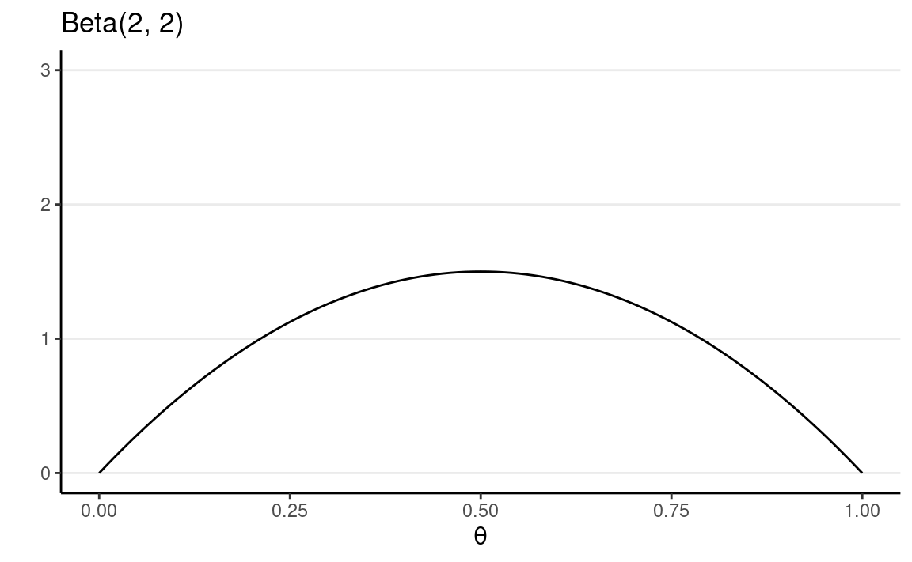
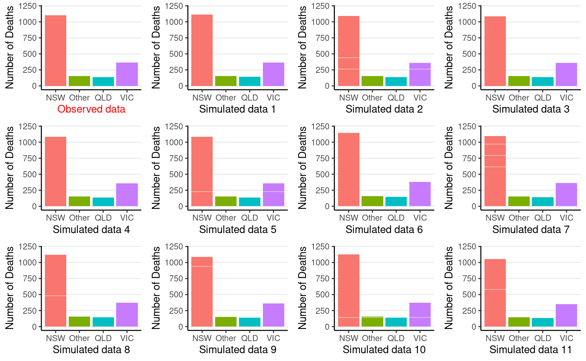
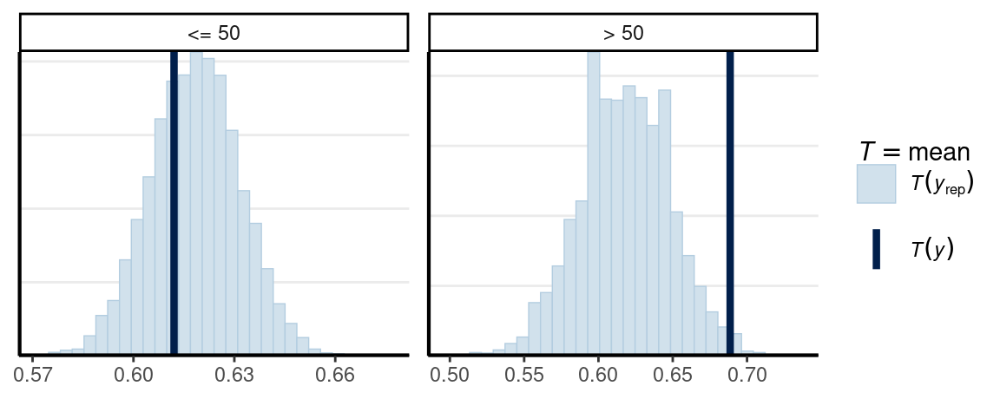

library(psych, include.only = "pairs.panels") # only load one function
library(tidyverse)
library(bayesplot)
theme_set(theme_classic() +
theme(panel.grid.major.y = element_line(color = "grey92")))
Steps of Bayesian Data Analysis
Some authors described the process as turning the Bayesian Crank, as the same workflow applies to a variety of research scenarios.
Adapted from Kruschke (2015, p.25), I conceptualize Bayesian data analysis as the following steps:
- Identify/Collect the data required to answer the
research questions.
- As a general recommendation, it is helpful to visualize the data to get a sense of how the data look, as well as to inspect for any potential anomalies in the data collection.
- Choose a statistical model for the data in relation to the research questions. The model should have sound theoretical justification and have parameters that are meaningful for the research questions.
- Specify prior distributions for the model parameters. Although this is a subjective endeavor, the priors chosen should be at least sensible to a skeptical audience.
- Obtain the posterior distributions for the model
parameters. As described below and later in the course, this can be
obtained by analytical or various mathematical approximations.
- For mathematical approximations, one should check the algorithms for convergence to make sure the results closely mimic the target posterior distributions.
- Conduct a posterior predictive check to examine the
fit between the model and the data, i.e., whether the chosen model with
the estimated parameters generate predictions that deviate from the data
being analyzed on important features.
- If the model does not fit the data, one should go back to step 2 to specify a different model.
- If the fit between the model and the data is deemed satisfactory, one can proceed to interpret the results in the context of the research questions. It is also important to visualize the results in ways that are meaningful for the analysis.
Beta-Bernoulli Example
We will be using a built-in data set in R about patients diagnosed with AIDS in Australia before July 1, 1991. Here is a description of the variables (from the R documentation):

{kind=link}
state: Grouped state of origin: NSWincludes ACT and other is WA, SA, NT, and TAS.sex: Sex of patient.diag:(Julian) date of diagnosis.death: (Julian) date of death or end of observation.status: A (alive) or D (dead) at end of observation.T.categ: Reported transmission category.age: Age (years) at diagnosis.
You should always first plot your data and get some summary statistics:
#> state sex diag death status T.categ age
#> 1 NSW M 10905 11081 D hs 35
#> 2 NSW M 11029 11096 D hs 53
#> 3 NSW M 9551 9983 D hs 42
#> 4 NSW M 9577 9654 D haem 44
#> 5 NSW M 10015 10290 D hs 39
#> 6 NSW M 9971 10344 D hs 36pairs.panels(Aids2, ellipses = FALSE)
We will be using the status variable. Our simple
research question is:
What was the death rate of AIDS in Australia when the data were collected?Bernoulli Model
If we assume that the outcome of the observations are exchangeable, meaning that the observations can be reordered in any way and still gives the same inference, then one can choose a model: \[y_i \sim \text{Bern}(\theta) \text{for }i = 1, 2, \ldots, N\]
- \(y_i\) = status of observation \(i\) (0 = A, 1 = D)
- \(N\) = number of patients in the data set
- \(\theta\) = probability of D1
The model states that: the sample data \(y\) follows a Bernoulli distribution with \(n\) with a parameter \(\theta\)
Exchangeability
To illustrate exchangeability in an example, say we take 6 rows in our data set:
| state | sex | diag | death | status | T.categ | age | |
|---|---|---|---|---|---|---|---|
| 1 | NSW | M | 10905 | 11081 | D | hs | 35 |
| 31 | NSW | F | 10961 | 11504 | A | id | 30 |
| 1802 | QLD | F | 9495 | 9753 | D | blood | 66 |
| 1811 | QLD | M | 10770 | 11504 | A | hsid | 29 |
| 2129 | VIC | M | 8499 | 8568 | D | hs | 43 |
| 2137 | VIC | M | 9055 | 9394 | D | hs | 29 |
Now, when we reorder the column status to something
like:
| state | sex | diag | death | status | T.categ | age | |
|---|---|---|---|---|---|---|---|
| 1 | NSW | M | 10905 | 11081 | D | hs | 35 |
| 31 | NSW | F | 10961 | 11504 | A | id | 30 |
| 1802 | QLD | F | 9495 | 9753 | D | blood | 66 |
| 1811 | QLD | M | 10770 | 11504 | D | hsid | 29 |
| 2129 | VIC | M | 8499 | 8568 | A | hs | 43 |
| 2137 | VIC | M | 9055 | 9394 | D | hs | 29 |
If the results are expected to be the same, then we say that the observations are assumed exchangeable. It happens when we assume that all observations have one common mean. However, if we think that there is a mean for females and a different mean for males, we cannot reorder the outcome randomly because they are no longer exchangeable (i.e., you cannot exchange a female score for a male score and expect to get the same results).
Exchangeability: A set of observations is said to be exchangeable if their joint probability distribution stays the same under all permutations. Roughly speaking, it means that the observations can be reordered and still provide the same inferences.
Check the Support
The first thing is to identify the support of the parameter, \(\theta\). Because \(\theta\) is a probability, its support is \([0, 1]\), meaning that it is continuous and can take any value from 0 to 1. For a continuous parameter, there are infinitely many possible values, and it is impossible to specify our beliefs for each value. So more commonly, we choose a probability density function with the same support as the parameter to express our prior belief.
Conjugate Prior: Beta Distribution
A commonly used family of prior distributions for a Bernoulli/binomial model is the Beta distribution, which has two parameters. We can write the prior as \[P(\theta) \sim \text{Beta}(a, b)\]
\(a\) and \(b\) are the two parameters. Here are a few examples:

You will notice that when \(a > b\), there will be more density closer to the right region (i.e., larger \(\theta\)), and vice versa. Also, when \(a\) and \(b\) become larger, the variance decreases.2
A nice interpretation of \(a\) and \(b\) in a Beta prior distribution is to consider
- \(a - 1\) = number of prior successes (e.g., D)
- \(b - 1\) = number of prior failures (e.g., A)
Therefore, with \(\text{Beta}(1, 1)\), one has seen 0 prior success and 0 failure, meaning that there is no prior information (i.e., noninformative). Therefore, it makes sense that all \(\theta\) values are equally likely. On the other hand, if one chooses \(\text{Beta}(10, 20)\), one has seen 9 prior successes and 19 prior failures, so one has quite a lot of prior information (indeed more than the data with only 10 observations), so this is a strong prior.
The smaller the variance of the prior distribution, the stronger ones belief before looking at the data, the more prior information
So by manipulating the values of \(a\) and \(b\), which are sometimes called hyperparameters, you can control the shape of the prior distribution as well as its strength, so it is quite flexible. Another advantage of using a beta prior is that it is a conjugate prior of the Bernoulli model, which means that the posterior distribution \(P(\theta \mid y)\) is also a beta distribution, the same as the prior distribution, although with different parameter values.
Conjugate Prior: For a specific model, conjugate priors yield posterior distributions in the same distribution family as the priors
Conjugacy greatly simplifies the computational burden for Bayesian analyses, so conjugate priors are almost the only ones used in earlier literature. However, this limited the applications of Bayesian methods, as for many problems, no conjugate priors can provide a realistic representation of ones belief. Modern Bayesian analysis instead relies on simulation-based methods to approximate the posterior distribution, which can accommodate almost any kind of prior distribution. Aside from a few examples in this note, mainly for pedagogical purposes, we will be using simulation-based methods in the coming weeks.
Proof of Conjugacy*
To derive the form of the posterior, first recognize that the Beta distribution has the form:
\[\begin{align} P(\theta) & = \mathrm{B}^{-1}(a, b) \theta^{a - 1} (1 - \theta)^{b - 1} \\ & \propto \theta^{a - 1} (1 - \theta)^{b - 1} \end{align}\]
Where \(\mathrm{B}(\cdot)\) is the beta function which is not very important for the class. As the density function is a function of \(\theta\), it suffices to write only the terms that involve \(\theta\).
Similarly, \[P(\mathbf{y} \mid \theta) \propto \theta^z (1 - \theta)^{N - z}.\]
Therefore,
\[\begin{align} P(\theta \mid \mathbf{y}) & \propto P(y \mid \theta) P(\theta) \\ & \propto \theta^z (1 - \theta)^{N - z} \theta^{a - 1} (1 - \theta)^{b - 1} \\ & = \theta^{a + z - 1} (1 - \theta)^{b + N - z - 1}. \end{align}\]
If we let \(a^* = a + z\), \(b^* = b + N - z\), we can see that \(P(\theta \mid \mathbf{y})\) is in the same form as the prior with \(a\) and \(b\) replaced by \(a^*\) and \(b^*\). Therefore, the posterior is also a beta distribution. So the beta distribution is a conjugate prior for the Bernoulli model.
In this example, we will choose a weakly informative Beta(2, 2) prior, which represents a weak belief as below:
ggplot(tibble(th = c(0, 1)), aes(x = th)) +
stat_function(fun = dbeta, args = list(shape1 = 2, shape2 = 2)) +
ylim(0, 3) +
labs(y = "", x = expression(theta), title = "Beta(2, 2)")

Dont Be Stubborn
One thing to remember is:
A good prior should give a non-zero probability/density for all possible values of a parameter
Otherwise, if the prior density for some parameter values is zero, the posterior density will be zero, regardless of how much the data support those parameter values
Data
count(Aids2, status)
#> status n
#> 1 A 1082
#> 2 D 1761The likelihood function is highly concentrated. I ran into some numerical issues as the computation gave zero, so I plotted the log-likelihood instead.
loglik <- function(th, N = 1082 + 1761, z = 1761) {
z * log(th) + (N - z) * log(1 - th)
}
ggplot(tibble(th = c(0.61, 0.63)), aes(x = th)) +
stat_function(fun = loglik, n = 501) +
labs(x = expression(theta), y = "Log-likelihood")
Note I only show a range of [0.610, 0.630] for the x-axis, which contains where the likelihood (thus also the log-likelihood) peaked.
Posterior
Based on the conjugacy, the posterior of \(\theta\) is Beta(1,807, 1,116). As were using a conjugate prior, the posterior is also a Beta distribution: \[P(\theta \mid y) \sim \text{Beta}(a + z, b + N - z),\] which is a distribution for \(a + z - 1\) successes and \(b + N - z\) failures. This makes perfect sense as our prior information as \(a - 1\) successes and \(b - 1\) failures, and from our data, we have \(y\) successes and \(n - y\) failures, so our updated belief is based on adding up those successes and failures.
Summarize the posterior
set.seed(2119)
num_draws <- 1000
sim_theta <- rbeta(num_draws, shape1 = 1807, shape2 = 1116)
c(`Bayes estimate` = mean(sim_theta),
`Posterior median` = median(sim_theta),
`Posterior SD` = sd(sim_theta),
`MAD` = mad(sim_theta),
`90% Credible interval (equal-tailed)` = quantile(sim_theta, probs = c(.1, .9)),
`90% HDI` = HDInterval::hdi(sim_theta, credMass = .9))
#> Bayes estimate
#> 0.618209694
#> Posterior median
#> 0.618382945
#> Posterior SD
#> 0.008829290
#> MAD
#> 0.009254166
#> 90% Credible interval (equal-tailed).10%
#> 0.606862338
#> 90% Credible interval (equal-tailed).90%
#> 0.628990588
#> 90% HDI.lower
#> 0.604051851
#> 90% HDI.upper
#> 0.632766654Posterior Predictive Check
Now, we need to know whether the model fits the data well. We dont
have much to check for a Bernoulli model if we only have the
status variable. However, as there is information for other
variables, we can use them to check the exchangeability assumption. For
example, we can ask whether the data from different state categories are
exchangeable. The death rate across the 4 state categories are
#> status
#> state A D
#> NSW 664 1116
#> Other 107 142
#> QLD 78 148
#> VIC 233 355
#> status
#> state A D
#> NSW 0.3730337 0.6269663
#> Other 0.4297189 0.5702811
#> QLD 0.3451327 0.6548673
#> VIC 0.3962585 0.6037415Now, we can generate some predictions from our posterior distribution and our model.
plist <- vector("list", 12L)
plist[[1]] <- ggplot(
Aids2,
aes(x = state, y = mean(status == "D"), fill = state)
) +
geom_bar(stat = "identity") +
guides(fill = "none") +
labs(x = "Observed data", y = "Number of Deaths") +
theme(axis.title.x = element_text(color = "red")) +
ylim(0, 1200)
for (i in 1:11) {
# Get the a value from posterior samples
theta_post <- rbeta(1, 1763, 1084)
# For each plausible theta value, generate a status variable
status_new <- sample(c("D", "A"), nrow(Aids2),
replace = TRUE,
prob = c(theta_post, 1 - theta_post)
)
df_new <- Aids2 %>%
mutate(status = factor(status_new))
plist[[i + 1]] <- plist[[1]] %+% df_new +
labs(x = paste("Simulated data", i)) +
theme(axis.title.x = element_text(color = "black"))
}
gridExtra::grid.arrange(grobs = plist, nrow = 3)

So the observed data (the first subplot) look similar to the
simulated data. We can also conduct a posterior predictive check by a
test statistic for subgroups. Here we will use the
bayesplot package and look at fit across groups:
# Draw posterior samples of theta
post_sample <- rbeta(1e4, 1807, 1116)
# Initialize a S by N matrix to store the simulated data
y_tilde <- matrix(NA,
nrow = length(post_sample),
ncol = length(Aids2$status))
for (s in seq_along(post_sample)) {
theta_s <- post_sample[s]
status_new <- sample(c("D", "A"), nrow(Aids2),
replace = TRUE,
prob = c(theta_s, 1 - theta_s)
)
y_tilde[s,] <- as.numeric(status_new == "D")
}
bayesplot::ppc_stat_grouped(
as.numeric(Aids2$status == "D"),
yrep = y_tilde,
group = Aids2$state
)
If the fit is good, the mean, indicated by the darker line, should be
within the simulated distribution based on the model. So the model that
assumes observations are exchangeable across states is not too off,
although it seems fitting less well for Other states.
Another check on age
# Create an age group indicator
age50 <- factor(Aids2$age > 50, labels = c("<= 50", "> 50"))
# Draw posterior samples of theta
post_sample <- rbeta(1e4, 1807, 1116)
# Initialize a S by N matrix to store the simulated data
y_tilde <- matrix(NA,
nrow = length(post_sample),
ncol = length(Aids2$status))
for (s in seq_along(post_sample)) {
theta_s <- post_sample[s]
status_new <- sample(c("D", "A"), nrow(Aids2),
replace = TRUE,
prob = c(theta_s, 1 - theta_s)
)
y_tilde[s,] <- as.numeric(status_new == "D")
}
bayesplot::ppc_stat_grouped(
as.numeric(Aids2$status == "D"),
yrep = y_tilde,
group = age50
)

As can be seen, the model seems off for those aged 50+.
Comparison to frequentist results
Using maximum likelihood, the estimated death rate would be \(\hat \theta = 1761 / 2843 = 0.62\), with a standard error (SE) of \(\sqrt{0.62 (1 - 0.62) / n} = 0.0091\), with a 90% confidence interval of \([0.6, 0.63]\), which is similar to the interval with Bayesian inference.
Sensitivity to different priors
You can see one needs a very strong prior (equivalent to 600 data points), and with the prior and the data not agreeing to get a substantially different conclusion.
Last updated
#> [1] "February 07, 2022"An additional thing to note for the Bernoulli/binomial model is that, instead of setting the prior on \(\theta\), sometimes were more interested in setting the prior for a transformed parameter that has values between \(-\infty\) and \(\infty\), such as one on the logit scale (as related to logistic regression).
The \(\mathrm{Beta}(1 / 2, 1 / 2)\) distribution is called a Jeffreys prior (https://en.wikipedia.org/wiki/Jeffreys_prior), which is derived according to some statistical principles for different models. One big advantage of a Jeffreys prior is that it is invariant, meaningful that the prior will stay the same even under reparameterization. However, like conjugate priors, Jeffreys prior limits the choice of prior even when true prior information is available.